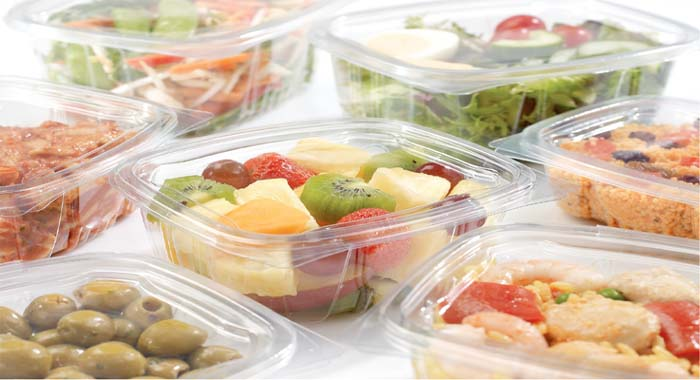
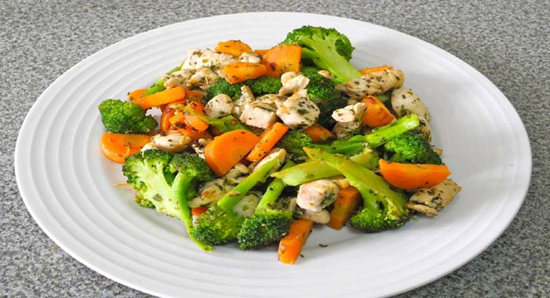
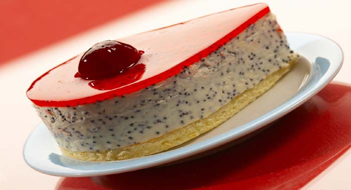
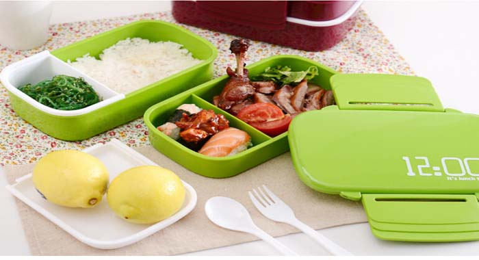

Korobka.kh.ua
 Пластиковая Упаковка
Пластиковая Упаковка
- 
-

- 
- 
- 
 Преимущества пластиковой упаковки
Преимущества пластиковой упаковки
Производство, хранение и продажа продуктов питания подразумевают использование качественного упаковочного материала. Он может быть полимерным (пластиковым), металлическим, картонным или стеклянным. Но все же наибольшей популярностью пользуется именно пластиковая упаковка для пищевых продуктов. Именно с ее помощью можно презентовать продукт в наиболее выгодном ракурсе. К другим причинам, по которым нужно заказать эту упаковку сразу оптом, можно отнести:
- гигиеничность,
- простоту и удобство использования,
- безопасность,
- универсальность,
- большой ассортимент типоразмеров и форм,
- легкую транспортабельность,
- низкую стоимость.
Несмотря на то, что упаковка пищевая, ее с легкостью можно использовать в хозяйственных и производственных целях.
Виды пластиковой упаковки


Пластиковая упаковка очень разнообразна, причем каждый год появляются все новые её виды и формы. Классифицировать её можно по способу производства, материалу и применению. Во-первых, она бывает мягкая и жесткая. К мягкой упаковке относятся всевозможные пакеты и мешки, пленки; к жесткой – коррексы, блистеры, лотки, гастроемкости, контейнеры для пищевых продуктов. Если говорить о материале, из которого делают упаковку, то, согласно европейской классификации, можно выделить семь видов. Все из нас видели загадочные буквы на одноразовых пластиковых упаковках, PET, BOPS, PVC, PP, PS. На самом деле это маркировка сырья:
- Полиэтилентерефталат (PET, PETF или ПЭТ, ПЭТФ) – самый распространенный и безопасный материал. Как правило, из него делают большинство пластиковой упаковки. Он идеально подходит для упаковки пищевых продуктов.
- Поливинилхлорид (PVC, или ПВХ) – является незаменимым для упаковки фармацевтических препаратов так как имеет в своем составе хлор, который препятствует размножению бактерий и микроорганизмов. Изделия из ПВХ обладают достаточной жесткостью, прочностью и в то же время эластичностью.
- Полипропилен (PP) – часто используют для производства упаковки для полуфабрикатов, с возможностью разогрева в микроволновой печи. Он максимально безопасен при нагреве и в этом его уникальность.
- Полистирол (PS, или ПС). – из него делают лотки для мяса птицы, яиц, а также одноразовую посуду. Он обладает высокой жесткостью и повышенной хрупкостью.
- Биоксиально-ориентированный полистирол (БОПС, OPS) – это полистирол, имеющий двухосную ориентацию волокон, что позволяет устранить хрупкость и получить прозрачную искрящуюся пленку. Из двухосно ориентированной полистирольной пленки можно получать термоформованием очень сложные изделия, например, тортницы, контейнеры.
Используя нашу полимерную упаковку, и Вы можете быть уверены в сохранности и привлекательном виде Вашей продукции.